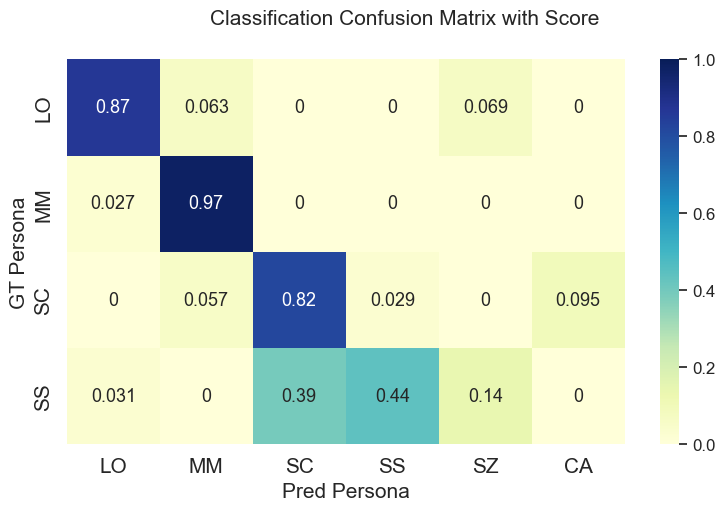
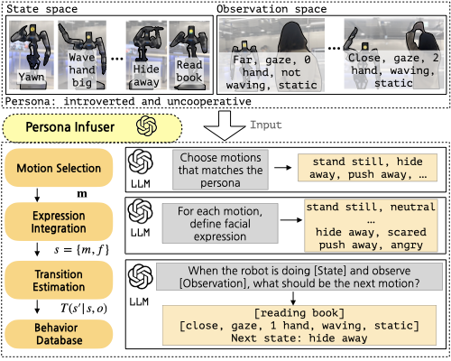

Towards Embedding Dynamic Personas in Interactive Robots:
Masquerading Animated Social Kinematics (MASK)
Supplementary Materials
News
Still Writing the paper...
Abstract
This paper presents the design and development of an innovative interactive robotic system to enhance audi- ence engagement using character-like personas. Built upon the foundations of persona-driven dialog agents, this work extends the agent’s application to the physical realm, employing robots to provide a more immersive and interactive experience. The proposed system, named the Masquerading Animated Social Kinematics (MASK), leverages an anthropomorphic robot which interacts with guests using non-verbal interactions, in- cluding facial expressions and gestures. A behaviour generation system based upon a finite-state machine structure effectively conditions robotic behaviour to convey distinct personas The MASK framework integrates a perception engine, a behaviour selection engine, and a comprehensive behaviour library to enable real-time, dynamic interactions with minimal human intervention in behaviour design. Throughout the user subject studies, we examined whether the users could recognize the intended character in both personality- and film-character- based persona conditions. We conclude by discussing the role of personas in interactive agents and the factors to consider for creating an engaging user experience.
Proposed method
Personality based Persona Demonstrations
Choose Persona
Character based Persona Demonstrations
Choose Persona
User Subject Studies Results
Survey Phase 1 - Personality Based Persona (52 Participants)
The users were asked to score the extroversion (E-score) and agreeableness (A-score) of the robot.
We conducted a two-way repeated-measures MANOVA on the results obtained from user survey questions S1 and S2 with α = 0.05.

We observed that the users could recognize both extroversion and the agreeableness of the robot.
There was a significiant difference is measured E-score between interacted persona (extroverted - introverted).
In addition, there was a significiant difference is measured A-score between interacted persona (agreeable - disagreeable).
Survey Phase 2 - Film Character Based Persona (108 Participants)
The users were asked to choose one of the six choices of the character and rate the matching score.

The classification accuracy was reported as 76.7%, the users were able to identify and classify the intended mimicing character.
We observed that the users could successfully identify the Cowardly Lion from The Wizard of OZ, Minions, and Scrooge characters. However, participants appeared to misclassify the character of Spock, especially between Spock (0.44) and Scrooge (0.39).
For more details, please check
User Subject Studies Protocols or Additional Results
Persona Infuser
In the quest to embed robots with distinct personas, we introduce a persona infuser that constructs a behavior database. This database, acts as a blueprint for persona-driven behavior, encoding all possible combinations of states, observations, and transitions by large language models.
Generated Samples
Choose Persona
Graph Visualization
Selected States: look_around, wave_hand_big, attract_to_come_closer, wave_hand_small, small_bow, stand_still
Initial State: look_around
Selected States: look_around, yawn, push_away, cross_arms, teasing
Initial State: look_around
Selected States: stand_still, look_around, reading_book, wave_hand_small, small_bow
Initial State: stand_still
Selected States: stand_still, reading_book, look_around, cross_arms, hide_away
Initial State: stand_still
Selected States: look_around, stand_still, yawn, wave_hand_big, attract_to_come_closer, teasing
Initial State: look_around
Selected States: look_around, cry, hide_away, yawn, stand_still
Initial State: look_around
Selected States: reading_book, look_around, cross_arms, push_away, yawn
Initial State: reading_book
Selected States: stand_still, look_around, cross_arms, reading_book
Initial State: stand_still
Selected States: stand_still, reading_book, look_around, small_bow, wave_hand_small
Initial State: stand_still
BibTeX
Bibtex